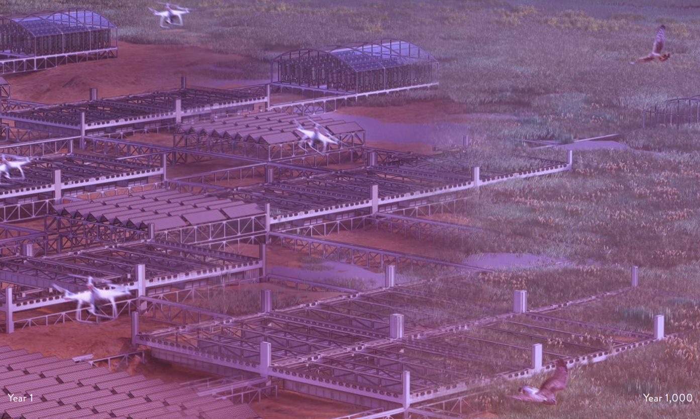

Abstract
This is placeholder abstract text. Replace it with a concise summary of the work — its aim, method, and key findings — written to stand on its own and give the reader the whole picture in a single paragraph.
A second paragraph can add context or scope. Keep the typography quiet and the measure comfortable so the prose stays easy to read from beginning to end.
